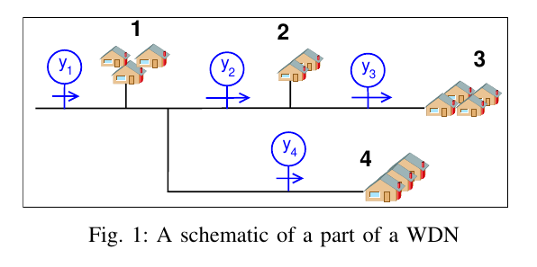
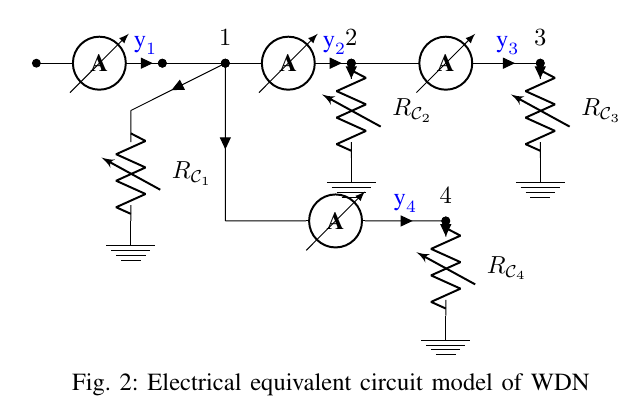
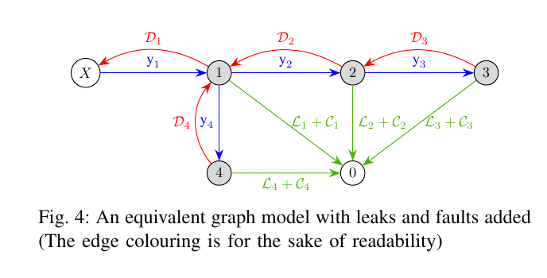
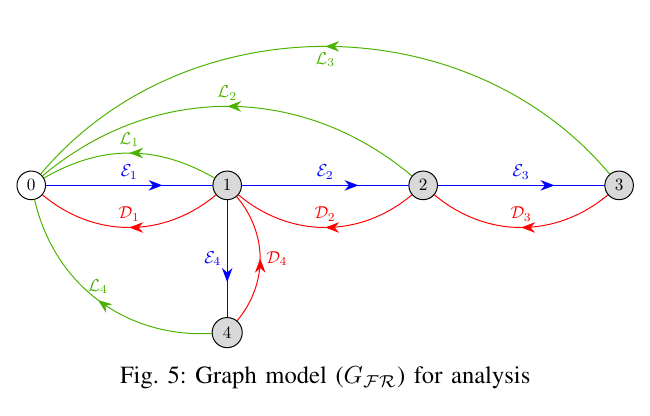

powered by fastpages
Prelude
In general, short post-doc research work is expected to be hyper-focused. This is because it is not easy for a candidate to look for an open problem, solve it and make it work within whatever short period available. The 1.5 years or so I spent for my postdoc at the CRAN lab had other ideas. When I started, it was not believed that we would have anything interesting and publishable out of it. So I had a lot less pressure and I went around looking for different ways to visualize the problem and chanced upon one interesting approach. This is a summary of what happened there in semi-technical terms. Of course, peer review would let us know if what we think is interesting is indeed so, but I can look back and say we came up with an interesting solution and got an interesting story to tell.
Background
The project SPHEREAU, a French abbreviation (Solutions de Programmation Hiérarchisée pour l’Efficience des Réseaux d’EAU), is a French government-funded collaborative project guided by the HYDREOS group. This project brought together the following industry and academic groups to develop a method to bring more energy efficiency to water distribution networks:
- Université de Lorraine (CRAN lab)
- ENGEES (Strasbourg)
- SAUR
- TLG Pro
- IRH Ingénieur Conseil (ANTEA Group)
My post doctoral research work was funded by this project. The work packages in which our team (CRAN) was involved in were: * Data-based model development * Leak estimation
Main Challenges
Fairly straightforward, one may think. Throw whatever sensor data available to a machine learning algorithm, it will spit out a model. Then do some anomaly detection to get the leaks. Done.
Not so fast when you deal with real-world data
Of course, real-world data has problems. Missing data, some mis-labelled data and so on are the bread and butter of data scientists. But, there was more:
- Only operational data was available. Meaning, we can’t train a model to understand normal behaviour and leaky behaviour.
- No ground truth and no labelling of leaks or other anomalies.
- The Sensor data could be missing for prolonged periods. And there were multiplicative and drift errors in Sensor data.
Explain your predictions
What’s the idea to describe it here?
I want to see this as an example of how traditional control theory discipline can aid in the use of machine learning tools for engineering applications. We made use of the civil engineering domain background, graph theory, some good old linear algebra to augment the Machine learning model to create a nice recipe for an explainable estimation of the leaks.
This I think is how a Post-Modern-Control-Engineer (or PoMoCoE) be pacified by the use of his skills in aiding the advancing Machine learning Tsunami and not be washed away by it.
And it also clearly shows that almost all the skills a control engineer holds are transferable with the integration of Machine Learning workflow.
Exploratory Data Analysis and Feature Selection
Understanding available Sensor Data
The data available from the sites were from the following sensors: * Flow sensors * Tank Level sensors * Several other quality analysis sensors
From the perspective of leak detection, the water quality sensors aren’t useful and hence we focus only on the flow and tank sensors. The sensors were available at sampling rates between 15 minutes and 1 hour (not counting missing data) depending upon when/where a sensor is installed.
We had to hunt for sensors for which data was available over a long period of time. And perhaps, data available for a group of sensors topological close to each other (and hence connected). After analyzing 100+ sensors we focused on a few of them to develop and illustrate the approach and then generalize it.
During this data analysis, we made note of a number of things that were not explicitly based on what the technicians could share with us: * Some sensor data had weird inverted characteristics and the data needed some pre-processing to even make it look reasonable. * Data resolution capabilities of some sensors were not good and led to an oscillatory behaviour with sensor data oscillating between two quantization states. * Sensors appeared to have been changed during the period for which the data was available and displayed different characteristics.
These aspects further reduced the sensors that we focused on.
Feature Selection/Engineering
Target: Flow Features available: Timestamp We are modelling the consumption characteristics of villages and groups of villages and are using the flow sensors (and if available, level sensors). Modelling it purely as a time-series data isn’t viable because of the following challenges: * Nonlinear characteristics of the data * Presence of unknown disturbances (Sensor faults, Leaks) * Presence of systemic changes (Addition of new water consumers, characteristic change due to vacations, etc.)
We first started looking for features that we can help in modelling the behaviour of the water network users. These can be split into three categories (apart from that of data): 1. The temporal features 1. The meteorological features 1. The social features
- Temporal Features: Extracting features from the time stamp associated with the sensor data is the obvious first step.
- Time of the day
- Day of the week
- Weekend or Weekday
- Meteorological Features Using some publicly available data sets, we collected several meteorological features:
- Temperature (per day: average, minimum, maximum )
- Humidity (per day: average)
- Precipitation (day sum)
- Social Features Again, using some publicly available details about France and in particular the region GrandEst where the villages are situated, we gathered the following features:
- Holidays
- School vacations
Post-Exploratory data analysis
- Instead of having two separate features like a day of the week and weekend/weekday, we did what is referred to as feature engineering. We numbered the days of the week from 1 to 5 for the weekdays and 14 and 15 for the weekends.
- Only the temperature data from the weather features were retained.
- There were other social details we wanted to integrate (such as the ‘Bridge’ vacation that the French routinely takes by taking a day off on Friday/Monday when there is a holiday on Thursday/Tuesday respectively). However, this was abandoned after some initial attempts.
Building a Machine-learning model
Model selection and constraining
The choice of model was tricky. Given that we are relying on features instead of inputs, the model, a black box machine learning model made sense. The following constraints drove the direction of choosing the model:
- Nonlinear characteristics
- Lack of ground truth
- Presence of outliers in the training data (leaks, sensors faults)
The lack of ground truth ruled out a neural network model. An SVM model has the capability to not worry too much about outliers and has the capability to learn any nonlinearity if an appropriate kernel is chosen (Radial Basis Function - RBF). To this, we decided to throw in another comfort
- Constraining the model through domain knowledge
That is, instead of an automatic learning algorithm to learn the hyperparameters and the parameters of the model, the hyperparameters were fixed. This would seem the solution is less generic (true), but would however work better for this specific case (also true).
The winner is: A hyperparameter-constrained SVM-Regression with RBF Kernel
Model training
With all the above set up, the training of the model run smoothly. To avoid overfitting, a regularisation kernel is also computed and is used as part of the model training. The key sequences can be summarized as:
- The data and the characteristics are preprocessed to give out neatly manageable inputs and outputs.
sensor_data, features = preprocessing(raw_data, characteristics)- The Kernels are then computed using the model constraints (by fixing the hyperparameters,
rbd_nodesandrbd_sigma)
kernel, kernel_reg = computer_kernel_rbf(features, rbf_nodes, rbf_sigma)- With the Kernels in place, we just run a simple regularized linear regression to obtain the kernel parameters
kernel_parameters = calculate_kernel_parameters(kernel, kernel_reg, sensor_data)Once we have the model, we predict the flow data such that we can then use it to generate simulated data
Topological model of the Water Network
Why do we need a topological model? Because we need to find a way to distinguish between the leaks and sensor faults using the relationship between the sensors due to their positioning.
Graph equivalent through Electrical analogy
We first developed a simple electrical circuit equivalent for the sensor network. The flow sensor would be replaced by current sensors, the consumption points would be replaced by resistances (connected to ground). (The capacitances would help to model the water tanks, but this was not included in the results).
A graph equivalent model was derived from this electrical equivalent circuit with a novelty, where the flow or the measurement is represented by edges and the consumption points represented by nodes. This is quite contrary to the traditional modelling approach but served well for our purpose.
We then used this graph and added representations for leaks (\(\mathcal{L}\)) and sensor faults (\(\mathcal{D}\)). Both these anomalies were represented as edges with appropriate colouring. The transformation from the WDN to the graph to analyse for the next step is given in the following images




Note that, we are assuming in Fig 5 that all the nodes have a leak and sensor faults. This is not necessarily the case in practice (and we will come to that), but is shown just for the sake of illustration.
Simultaneous detectability of Sensor faults and Leaks
The graph in Fig 5 is monstrous despite the caveat that we are considering leaks and faults in all the nodes. However, this is true in situations where we are trying to find when we don’t know otherwise, that is when we have to distinguish between sensor faults and leaks.
Our question hence was, can we derive conditions to distinguish between a fault and a leak and when.
We prove this is under a specific graph condition which is pretty easy to check
Now, what happened as a bonus was, this condition helped us to actually obtain a neat strategy to estimate leaks as discussed in the next section.
What are the steps to verify this ability to distinguish sensor faults and leaks?
- partition the graph into subgraphs,
- Verify if the subgraph containing the node 0 is a tree.
Yep, that’s it. So how do we do it? or rather what is the trick?
- We equate detectability to the solvability of the equations represented by the graph (this is a very fundamental requirement, so true. The caveat is that it is very conservative. Well, fortunately for us, it does not matter because of the bonus).
Final bonus: Checking whether a subgraph is a tree is super fast (\(\mathbf{O}(n)\) in complexity parlance)
The Leak Estimation Strategy
Given a large water distribution network and its graph, we partition into several subgraphs. This is necessitated because, on large networks, the amplitude of flow measured by sensors sitting on top of trees can become insensitive to leaks and faults in sensors downstream.
This allows us to analyze the sub-regions of a water distribution network and apply the simultaneous detectability results. 1. Consider all possible leak and sensor fault combinations 1. Obtain those combinations that are distinguishable using the detectability results
This is an offline process and needs to be done once. And for online,
- Solve a simple linear equation Ax = b (x contains both leaks and sensor faults)
- Apply positivity constraints on leaks
- Compute the \(\mathbb{L}_1\) norm
- Output: The combination(s) of leaks and faults presenting the smallest norm.
This algorithm essentially reproduces LASSO, with one extra advantage. Since several combinations can have the smallest norm (it happens more than we imagine, especially when there are sensor faults), we can estimate leaks not as a single point, but as a range. This would help the engineer to make a better decision and explains the underlying process better.
Concluding Remarks
Our paper has been submitted for review and the draft version can be accessed in this archive link arXiv:2007.09401